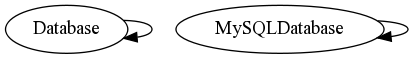

Master index
Index for simulation/src/+edu/+stanford/+covert/+db
Dependency Graph for simulation/src/+edu/+stanford/+covert/+db

Generated on Thu 19-Jul-2012 18:32:10 by
m2html
© 2005
 Master index
Master index Master index
Master index